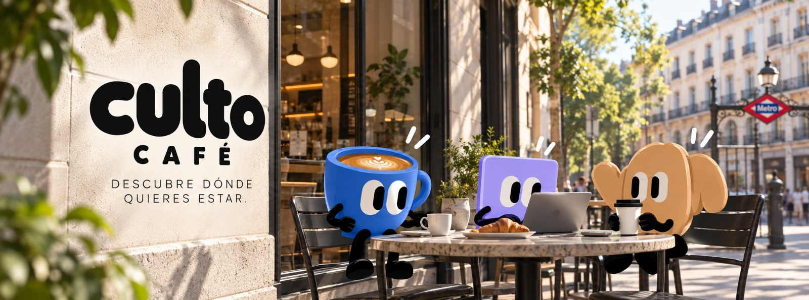

Malasaña · Las Letras · Lavapiés
Specialty coffee in Madrid, with a point of view
Verified info for every independent coffee shop —bean origin, roast, brew methods and vibe—, a map that sorts by your location, and Culto, a WhatsApp guide that tells you where to have your next coffee.
20 coffee shops, each visited and verified
The Culto Café story
One place: coffee
Culto finds the coffee shops, Neo focuses and Moka connects. Watch them around Madrid.
How it works
From "where should I go?" to coffee, in three steps
The website is the shop window. Culto, on WhatsApp, is where the recommendation happens — no app, no account.
Message Culto- 01
Explore the site
Filter by neighbourhood, by what you're up to —work, study, meet up, tasting— and by Wi-Fi, terrace, dogs or price. Every listing has bean origin, roast, methods and prices.
- 02
Check the map
Turn on your location and the coffee shops sort by distance. The nearest one is highlighted, with a one-tap button for directions.
- 03
Message Culto on WhatsApp
Tell it what you feel like —"somewhere quiet to work near Lavapiés"— and it recommends by taste match, not just distance.
The coffee shops
Find your specialty coffee shop in Madrid
Twenty specialty coffee shops across Malasaña, Barrio de las Letras and Lavapiés. Filter, check the map and sort by how close they are to you.
Prices are indicative and each menu may vary. Map coordinates are approximate to street level.
Looking for somewhere quiet to work all morning, around Malasaña 👀
Try Misión Café (C/ de los Reyes, 5). Spacious, bright, jazz playing and sockets around the room. Hola Coffee beans and an in-house bakery. Opens at 8:00. Want directions?
Perfect. And somewhere with a terrace for the weekend?
La Bicicleta Café, on Plaza de San Ildefonso — it has a terrace and it's built for settling in ☕
Meet Culto
One coffee and let's see
Culto is the Culto Café guide. It doesn't improvise like a generic search: it answers only with verified data from the coffee shops, with real coffee judgement —roasts, methods, vibe— on the WhatsApp you already use.
- Recommends by taste match, not just distance
- Answers coffee questions: roasts, methods, flavour profiles
- No app, no account: just message it
About
A guide with judgement, not another search box
Culto Café is a discovery and loyalty platform for specialty coffee shops in Madrid. We connect people looking for a great coffee with the independent shops that genuinely do it well, through info verified shop by shop and a conversational guide.
The model is simple: people use it for free; coffee shops get visibility and loyalty tools closer to what the big chains have. We treat data with the same care we put into curating each listing.
For coffee shops
Run a specialty coffee shop?
We give you visibility with people who look for quality, and loyalty tools within reach. People use it for free; you show up where it matters.